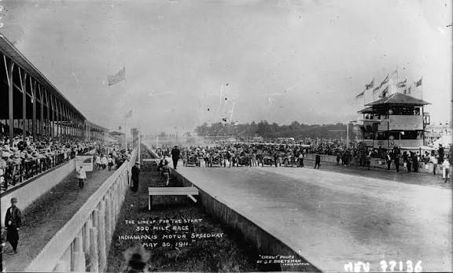

A História do Automobilismo
O automobilismo nasceu de uma necessidade prática: provar que as recém-inventadas máquinas motorizadas eram opções viáveis (e superiores) para substituir as carruagens puxadas a cavalos. O que começou no final do século XIX como um simples teste de durabilidade, rapidamente se transformou em uma paixão global movida a adrenalina e velocidade.

O Berço Francês e as Corridas de Cidade a Cidade
A primeira competição automobilística oficial registrada na história ocorreu na França, em 1894. Organizada pela publicação Le Petit Journal, a prova ligava Paris a Ruão (cerca de 126 km) e funcionava mais como um teste de confiabilidade do que como uma corrida tradicional. No ano seguinte, em 1895, aconteceu a primeira corrida de velocidade pura: a Paris-Bordéus-Paris. Com um trajeto exaustivo de 1.178 km, Émile Levassor foi o primeiro a cruzar a linha de chegada, dirigindo por 48 horas quase ininterruptas (embora tenha sido desclassificado por uma tecnicalidade no regulamento).
Nesta época romântica e perigosa, as corridas aconteciam em vias públicas de terra batida. Não havia barreiras de proteção, o controle de público era inexistente e a poeira cegava os pilotos. Com o aumento vertiginoso da potência dos motores, os acidentes fatais envolvendo competidores e espectadores tornaram o formato insustentável no início do século XX.
A Era dos Grandes Prêmios e os Primeiros Circuitos
Para garantir o futuro do esporte, as disputas migraram das estradas abertas para os circuitos fechados. Muitos dos primeiros autódromos eram antigos hipódromos adaptados ou imensas pistas ovais de terra e tijolos, como o icônico Indianapolis Motor Speedway, inaugurado em 1909 nos Estados Unidos.
Na Europa da década de 1920, o conceito de "Grande Prêmio" (Grand Prix) se consolidou, promovendo o embate direto entre fabricantes de diferentes nações. Foi o período em que nasceram as lendárias 24 Horas de Le Mans (1923), criada para testar a resistência extrema das máquinas, e o charmoso GP de Mônaco (1929), que levou os carros de volta às ruas, mas desta vez em um ambiente controlado e focado na habilidade técnica.

1950: O Nascimento da Fórmula 1
O divisor de águas definitivo do esporte a motor ocorreu após a Segunda Guerra Mundial. A Federação Internacional de Automobilismo (FIA) decidiu padronizar as regras dos Grandes Prêmios europeus e criar um campeonato mundial de pilotos. A palavra "Fórmula" foi escolhida para representar esse conjunto estrito de regras (peso, cilindrada do motor, etc.) que todos os construtores deveriam seguir.
Em 13 de maio de 1950, no circuito de Silverstone, em uma antiga base aérea na Inglaterra, foi dada a largada para a primeira corrida da história da Fórmula 1. Os carros eram monstros mecânicos com motores dianteiros potentes, pneus estreitos e zero proteção para os pilotos, que corriam vestindo apenas capacetes de couro e óculos de aviação. A década inaugural foi dominada pela precisão e frieza do argentino Juan Manuel Fangio, que conquistou cinco títulos mundiais pilotando por quatro marcas diferentes (Alfa Romeo, Maserati, Mercedes e Ferrari), tornando-se o primeiro grande herói e lenda do automobilismo mundial.